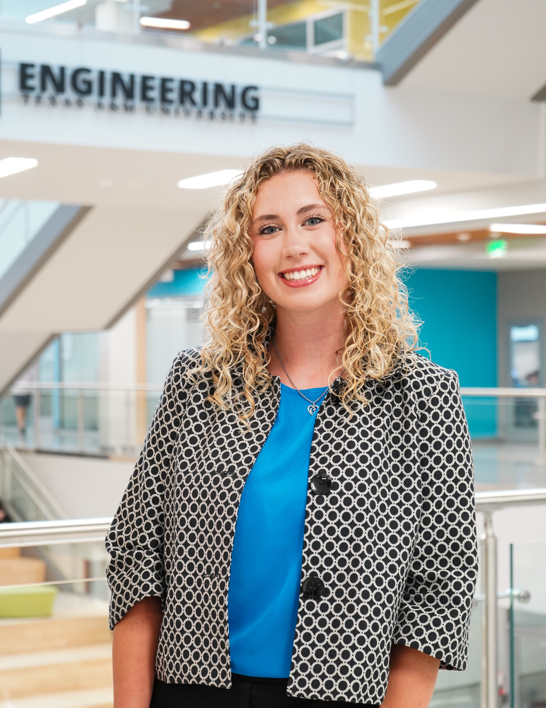

About Me
I got my start in computer science in high school. I had an extremely talented teacher who introduced me to my first-ever programming language, Java. Throughout my high school career, I took three different computer science classes, including AP Computer Science, where I scored a 5 on the AP Computer Science Test (BC). I also competed in UIL Computer
Science and was a three-time state medalist, scoring bronze, silver, and gold.
When choosing a university to attend, Texas A&M was the obvious choice. My parents and older brother studied at Texas A&M. However, beyond that, the university is known for its excellent engineering program. In my first semester, I learned and became fluent in Python. Its simplicity and functionality were highly appealing to me. I spent my second year focused on learning C++.
I found pointers and memory references challenging but interesting. Also, in my second year, I gained experience with Assembly, Racket, and C. I am excited to continue expanding my skillset here at Texas A&M.
While I have greatly enjoyed my time in class, I have also prioritized involvement on campus. I was a member of FORME (Freshmen Organizing and Running Mixed Events) during my first year. FORME is an all-freshman organization that is
50% service and 50% social with the goal of giving freshmen a community and foundation on campus. Once freshman year ended, I looked for new opportunities to stay involved on campus, such as being a Big Event Staff Assistant and
Fish Camp counselor for two summers. I applied for and was selected to be in RYLLIES (Respecting Yourself while demonstrating Leadership, Loyalty, Integrity, Excellence, and Selfless Service), a women's organization, in the spring
of my sophomore year, where I have gotten to partake in more community service and sisterhood events. I also wanted to be more involved in engineering, so I interviewed for and made it into SEC (Student Engineering Council). As
an SEC member, I have advocated for engineering students and spread awareness about engineering programs. Specifically, I am on the Marketing Committee, so I
work primarily on the SEC Instagram, which can be found HERE.
My campus involvement has helped me grow outside of the classroom in unimaginable ways. I have developed into a strong leader that prioritizes healthy communication. I pride myself on being authentic, confident, and open-minded. I aim to stay involved
on campus to build these soft skills and simultaneously expand my Computer Science knowledge. With a rapidly expanding technology industry, I am eager
to get more hands-on experience and challenge myself with advanced projects. From software development to AI, I am fascinated
by every aspect of Computer Science, and here at Texas A&M, I am constantly taking steps every day to prepare for my future.